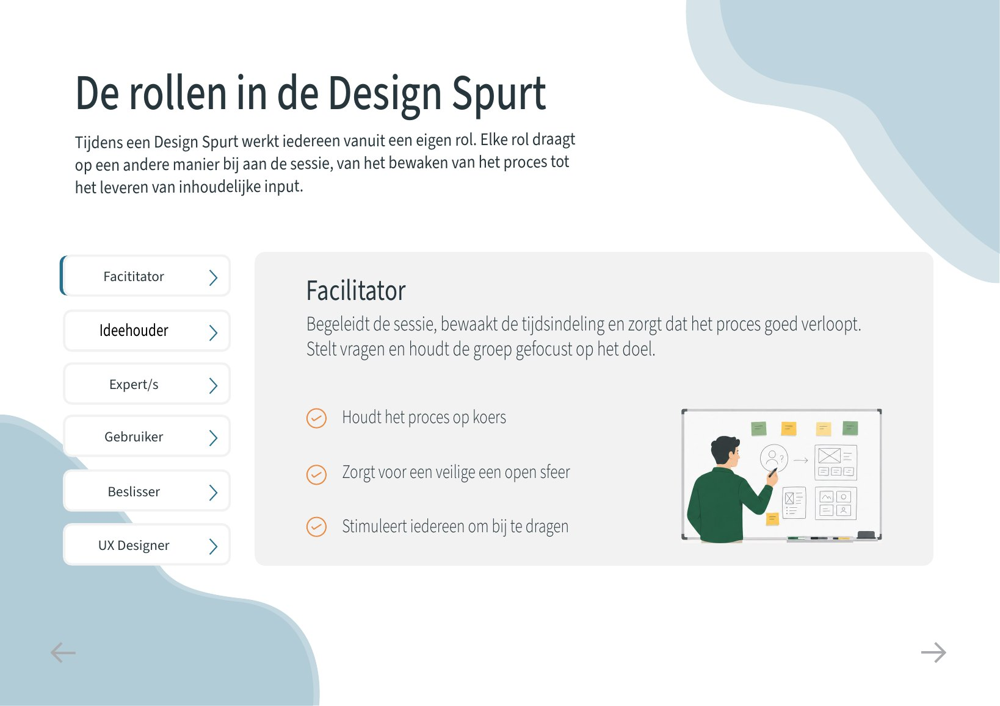
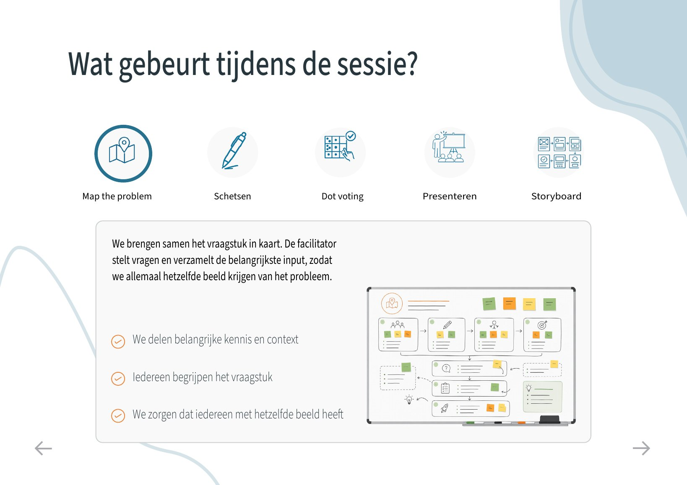
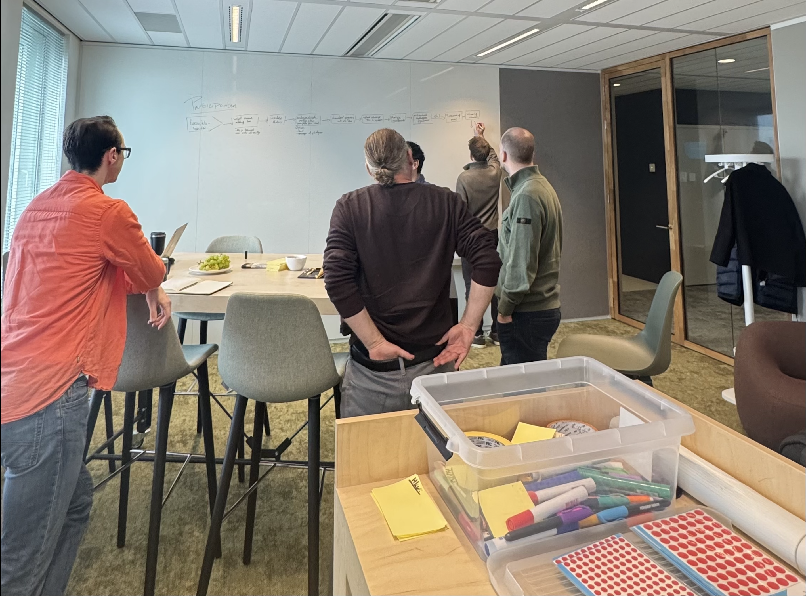
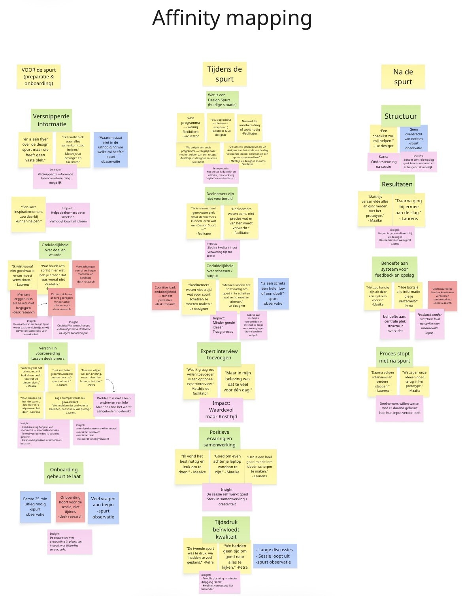

Beter voorbereid op een Design Spurt
Een interactief digitaal boekje dat deelnemers vóór de sessie voorbereidt op wat ze kunnen verwachten.
- Rol: UX/UI Designer
- Periode: feb 2026 - juni 2026
- Opdrachtgever: Antea Group
- Tools: Figma, Miro, Adobe InDesign & Adobe Acrobat
In het kort
- Probleem
- Een brede vraag: hoe kan de Design Spurt van Antea Group beter verlopen? Waar het probleem zat, was nog niet duidelijk.
- Wat ik deed
- Zelfstandig onderzoek: 4 interviews met een organisator en deelnemers van de Design Spurt, een observatie van een live sessie en deskresearch naar vergelijkbare sessies. Daarna een co-creatiesessie met stakeholders en een interactief prototype, getest met 2 deelnemers.
- Resultaat
- Een interactief Participant Pack van zes pagina's, waarmee nieuwe deelnemers zich in ongeveer 10 minuten zelfstandig voorbereiden. Verbeterd na de test en opgeleverd aan Antea Group.




Introductie
De Design Spurt is een compacte versie van de Design Sprint: in één dag werkt een kleine groep van een vraagstuk naar een gezamenlijke oplossingsrichting. Iedereen aan tafel heeft een vaste rol, zodat er altijd iemand namens de doelgroep meedenkt.
Duur
Eén dag, van 10:00 tot 16:00.
Wie zitten er aan tafel?
Een kleine groep collega's of externe partijen, elk met een rol: facilitator, ideehouder, expert, iemand namens de gebruiker, beslisser en UX-designer.
Doelgroep van mijn project
Collega's en klanten van Antea Group die deelnemen aan een Design Spurt, zowel ervaren als nieuwe deelnemers.
Zo verloopt een Design Spurt
Eerst maakt de groep een probleemmap, zodat iedereen hetzelfde beeld van het vraagstuk heeft. Daarna schetst iedereen zelf oplossingen en met dot voting komen de sterkste ideeën bovendrijven. Die worden gepresenteerd en aan het eind van de dag uitgewerkt in een storyboard. Dat storyboard is de basis waarmee de UX-designer een prototype maakt.
Probleemmap
Individueel schetsen
Dot voting
Ideeën presenteren
Storyboard

Toen ik aan dit project begon, was nog niet bepaald welk onderdeel van de Design Spurt verbeterd moest worden. Antea Group wilde dat de sessie efficiënter verloopt en tot betere resultaten leidt, en gaf mij de ruimte om zelf te onderzoeken waar de belangrijkste UX-kans lag. Mijn eerste stap was dus begrijpen waar deelnemers en facilitators in de praktijk tegenaan liepen.
Oorspronkelijke ontwerpvraag
Hoe kan de facilitator van een Design Spurt beter ondersteund worden, zodat deelnemers efficiënter kunnen samenwerken en kwalitatieve input leveren voor het ontwerpproces?
Double Diamond
Voor dit project werkte ik volgens het Double Diamond model: Discover, Define, Develop en Deliver.
Ik koos voor dit model omdat mijn opdracht begon met een open vraag. Ik wist nog niet wát ik moest verbeteren, dus ik kon niet meteen een oplossing gaan ontwerpen. De eerste diamant dwong mij om eerst breed te onderzoeken en daarna bewust één probleem te kiezen. Pas daarna ging ik in de tweede diamant ideeën bedenken en testen.
Doordat elke fase eerst opent en daarna sluit, moest ik bij elke stap een keuze maken en die onderbouwen. Zo bleef het project gericht en kon ik steeds laten zien waarom ik een bepaalde kant op ging.

Eerst begrijpen waar het probleem echt zit
Omdat de opdracht nog breed was, wilde ik eerst begrijpen hoe de Design Spurt nu verloopt. Ik combineerde vier methoden: zo hoorde ik niet alleen wat mensen zeiden, maar zag ik ook wat er tijdens een echte sessie gebeurde. Daarna toetste ik mijn bevindingen aan bestaande kennis.
Eén expert, twee rollen
Ik begon bij Matthijs, UX-designer bij Antea Group. In de ene Design Spurt is hij de facilitator, in de andere de UX-designer. Daardoor kent hij het proces vanuit beide rollen. Daarom was hij een logisch startpunt.
- Deelnemers weten vooraf niet wat er van hen verwacht wordt.
- Er is geen vaste plek met informatie over de Design Spurt.
- Door tijdsdruk is er geen ruimte voor inspiratiemateriaal of een expertinterview tijdens de sessie.
- De output wordt niet op een vaste manier bewaard.
"Er is momenteel geen vaste plek waar deelnemers kunnen lezen wat een Design Spurt is, wat er van hen wordt verwacht."
Een echte sessie observeren
Mensen vertellen niet altijd wat ze echt doen. Daarom observeerde ik een volledige Design Spurt bij Antea Group. Ik deed zelf niet mee (fly on the wall), zodat ik de sessie niet beïnvloedde.
- De opening en onboarding duurden ±25 minuten, omdat deelnemers vragen hadden over hun rol en wat er van hen verwacht werd.
- Bij het schetsen ontbraken voorbeelden, waardoor deelnemers twijfelden over wat ze moesten maken.
- De sessie liep uit. Daardoor moest de deelnemer namens de gebruiker eerder weg, en miste het team de rest van de dag dat perspectief.
- De output werd verzameld, maar niet centraal opgeslagen.
- Wat goed werkte: de vaste structuur met een beslisser en een timer zorgde voor focus.
"Waarom staat niet in de uitnodiging wie welke rol heeft?"
Deelnemers spreken
Daarna sprak ik drie deelnemers. Ik koos bewust mensen met verschillende ervaring, zodat ik kon vergelijken wat een nieuwe deelnemer mist en wat iemand met ervaring nog steeds lastig vindt.
- Laurens, weinig voorkennis: miste duidelijkheid over het doel en de werkwijze, en wilde weten wat er met zijn input gebeurt. De lage drempel vond hij juist prettig.
- Maaike, eerder deelgenomen: kon goed starten door haar ervaring, maar ziet de meerwaarde van één centrale informatieplek.
- Petra, eerder deelgenomen: merkt dat tijdsdruk de samenwerking beïnvloedt en wil vooraf duidelijke doelen en een systeem om output vast te leggen.
"Ik wist vooraf niet goed wat ik ervan moest verwachten." — Laurens
Hoe bereiden andere sessies deelnemers voor?
Toen voorbereiding steeds terugkwam, onderzocht ik hoe vergelijkbare workshops deelnemers vooraf informeren. Ik gebruikte Nielsen Norman Group, de Sprint-methode en onderzoek naar cognitive load om te checken of mijn bevindingen ook buiten Antea Group kloppen.
- Een korte voorbereiding vooraf, met doel, context en voorbeelden, voorkomt tijdverlies tijdens de sessie.
- Onduidelijkheid over verwachtingen leidt tot passieve deelname en minder creativiteit.
- Zonder vaste structuur gaat de output van een sessie verloren.
Waar ligt de grootste verbeterkans?
Ik zette alle bevindingen bij elkaar en clusterde ze met affinity mapping. Interviews, observatie en deskresearch lieten steeds dezelfde patronen zien. Daardoor kon ik er meer op vertrouwen, ook al was mijn steekproef klein. Ik deelde de bevindingen in op het moment waarop ze spelen: vóór, tijdens en na de Design Spurt.

Geen centrale informatieplek
De uitnodiging bevat alleen de dag en tijd van de sessie, en er is geen plek waar deelnemers vooraf kunnen lezen wat een Design Spurt is. Daardoor gebeurt de onboarding pas tijdens de sessie.
Verschil in voorkennis
Ervaren deelnemers kunnen direct starten, nieuwe deelnemers moeten eerst begrijpen wat er van hen verwacht wordt.
Onduidelijke verwachtingen
Zonder voorbeelden en duidelijke instructies twijfelen deelnemers, bijvoorbeeld tijdens het schetsen. Dat kost tijd.
Output gaat verloren
Notities en schetsen worden niet op een vaste plek bewaard, en deelnemers horen weinig over wat er met hun input gebeurt.
De Design Spurt zelf werkt goed. De verbeterkansen liggen vóór en na de sessie. Vooral nieuwe deelnemers beginnen zonder duidelijk beeld: ze weten niet wat de sessie inhoudt, waarom ze erbij zijn en wat er van hen verwacht wordt. Daardoor gaat het begin van de dag naar uitleg over het proces, terwijl de aandacht naar het vraagstuk zelf moet gaan.
Wat er nu mist
| Nu | Gewenst | Wat ontbreekt |
|---|---|---|
| Deelnemers starten zonder voorbereiding | Deelnemers starten voorbereid en geïnformeerd | Een centrale plek voor informatie |
| Onduidelijk wat hun rol en bijdrage is | Duidelijke verwachtingen over rol en bijdrage | Een vaste manier van voorbereiden |
| Onboarding tijdens de sessie (±25 min) | Onboarding vóór de sessie | Duidelijke instructies en voorbeelden |
| Output wordt niet centraal opgeslagen | Output is centraal opgeslagen en herbruikbaar | Structurele archivering |
Zowel de voorbereiding vóór de sessie als de archivering erna waren echte kansen. Omdat ik weinig tijd had, kon ik ze niet allebei goed uitwerken. Ik koos voor de voorbereiding: dat probleem kwam in alle bronnen terug en raakt het begin van elke sessie.
Een expertinterview tijdens de sessie liet ik ook bewust liggen. Het is waardevol, maar kost tijd: volgens Matthijs past het niet binnen één dag. En de sessie zelf werkt al goed, de grootste winst zat ervoor.
Mijn doel werd: deelnemers vooraf voldoende context geven om met meer duidelijkheid en minder procesvragen aan de Design Spurt te beginnen.
Aangescherpte ontwerpvraag
Hoe kunnen deelnemers van een Design Spurt zelfstandig worden voorbereid op de methode, hun rol en het verloop van de sessie, zodat zij goed voorbereid deelnemen zonder dat dit ten koste gaat van de sessietijd?
Na het onderzoek scherpte ik mijn ontwerpvraag aan. Het ondersteunen van de facilitator blijft het doel: als deelnemers voorbereid binnenkomen, hoeft de facilitator tijdens de sessie minder uit te leggen en blijft er meer tijd over voor het vraagstuk. Alleen ligt de oplossing niet bij de facilitator zelf, maar bij de voorbereiding van de deelnemers.
Reflectie op mijn onderzoek
- Mijn steekproef was klein: 3 deelnemers, 1 organisator en 1 geobserveerde sessie. De inzichten zijn dus indicatief, niet representatief.
- De kracht zat in de combinatie van methoden: dezelfde knelpunten kwamen terug in interviews, observatie én deskresearch.
- Een volgende keer zou ik meer sessies observeren, meer facilitators en deelnemers spreken en de patronen toetsen met een korte enquête.
Hoe kunnen we nieuwe deelnemers beter voorbereiden?
Met de aangescherpte ontwerpvraag als uitgangspunt organiseerde en faciliteerde ik een co-creatiesessie met stakeholders die de Design Spurt vanuit verschillende rollen kennen. De sessie duurde een uur. Daarom koos ik elke methode bewust, zodat we in die tijd van veel ideeën naar één onderbouwde keuze konden komen.

Brainwriting
Iedereen bedacht eerst zelf, op papier, manieren om nieuwe deelnemers vooraf te informeren.
Waarom: uit mijn deskresearch bleek dat direct samen brainstormen leidt tot dominantie en minder diverse ideeën. Door eerst te schrijven kreeg iedereen evenveel ruimte, en het gaat sneller dan een open discussie.
Ideeën verder ontwikkelen
Daarna deelden we de ideeën en bouwden deelnemers verder op elkaars oplossingen.
Waarom: de stakeholders kennen de Design Spurt vanuit verschillende rollen. Door op elkaars ideeën voort te bouwen werden die perspectieven gecombineerd, zonder steeds opnieuw te beginnen.
Dot voting
Vervolgens stemde iedereen op de ideeën die volgens hen het beste antwoord gaven op de ontwerpvraag.
Waarom: in een paar minuten zie je waar het meeste draagvlak zit, en iedereen heeft een even zware stem. De deelnemers kenden de methode al uit de Design Spurt, dus er was geen uitleg nodig.
Impact / effort
De sterkste ideeën vergeleken we op impact voor nieuwe deelnemers en op haalbaarheid binnen mijn afstudeerproject.
Waarom: stemmen laat zien wat mensen goed vinden, maar niet wat haalbaar is. Met deze vergelijking zorgde ik ervoor dat de gekozen richting ook binnen mijn tijd uit te werken was.
Van digitale flyer naar Participant Pack
De sessie leverde onder andere een korte introductievideo, een duidelijker voorbereidingsformat en een digitale flyer op die met de uitnodiging meegestuurd kan worden. De digitale flyer kreeg de meeste stemmen: kort, laagdrempelig en makkelijk te delen.
Maar een flyer heeft weinig ruimte. Uit mijn onderzoek wist ik dat nieuwe deelnemers willen weten wat een Design Spurt is, waarom zij deelnemen, welke rol zij hebben en hoe de dag verloopt. Als je dat allemaal op één flyer zet, wordt hij druk en onoverzichtelijk.
Ik hield vast aan wat de groep sterk vond aan de flyer: kort, digitaal en makkelijk te delen. Maar ik werkte het uit als een interactief Participant Pack: een klein digitaal boekje waarin elke pagina kort blijft en extra uitleg pas verschijnt als je erop klikt. Zo past alle informatie erin, zonder dat het onoverzichtelijk wordt.
Hoe heb ik het Participant Pack opgebouwd?
Het onderzoek bepaalde welke informatie erin moest: de vragen die nieuwe deelnemers in de observatie en interviews stelden. Theorie hielp mij bepalen hoe ik die informatie aanbied.
Kort & duidelijk
Alleen de informatie die nieuwe deelnemers nodig hebben om te begrijpen wat hen tijdens de Design Spurt te wachten staat.
In kleine stappen
De informatie is verdeeld over korte pagina's, zodat deelnemers niet alles tegelijk hoeven te verwerken.
Extra uitleg wanneer nodig
Aanvullende informatie, bijvoorbeeld over rollen of vervolgstappen, verschijnt pas als een deelnemer erop klikt. Zo krijgen nieuwe deelnemers genoeg uitleg, zonder ervaren deelnemers te overladen.
Vóór de sessie beschikbaar
Het Participant Pack gaat mee met de uitnodiging, zodat de uitleg al vóór de Design Spurt plaatsvindt.
Waarom deze ontwerpkeuzes?
Volgens de Cognitive Load Theory van Sweller (1988) kan iemand maar een beperkte hoeveelheid informatie tegelijk verwerken. Dat is de reden voor de korte pagina's en de extra uitleg die je zelf openklikt.
Ook baseerde ik mij op de day-0 call uit het artikel “Day-0 Calls” van Nielsen Norman Group (Brown, 2022). Dat is een kort online gesprek met alle deelnemers, een paar dagen vóór een workshop. De groep spreekt dan samen de doelen af en de facilitator laat zien wat deelnemers kunnen verwachten. Zo begint niemand verrast aan de workshop.
Het Participant Pack neemt het tweede deel over: deelnemers laten zien wat ze kunnen verwachten. Net als in het artikel staat er geen volledig draaiboek in, alleen de grote lijnen. Het samen afspreken van doelen doet het boekje niet, omdat het geen gesprek is. Dat blijft het werk van de facilitator aan het begin van de sessie.
Waarom een interactieve PDF?
Er was geen budget voor dit project. Een website zou binnen Antea Group hosting, beheer en afstemming met IT vragen. Een PDF kan zonder extra kosten als bijlage mee met de uitnodiging, en deelnemers hoeven geen nieuwe tool te leren gebruiken.
Het nadeel: niet elke PDF-viewer ondersteunt knoppen en klikbare onderdelen. Dat kwam ook uit de test naar voren, en daar heb ik rekening mee gehouden.
Een algemeen boekje, een specifieke uitnodiging
Ik wilde het Participant Pack zo maken dat het niet voor elke sessie aangepast hoeft te worden. Daarom staat er algemene informatie in: wat een Design Spurt is, hoe de dag verloopt en welke rollen er zijn.
Wat per sessie verschilt, hoort in de uitnodiging. Nu staan daar alleen de dag en tijd in. Mijn advies aan Antea Group: stuur het boekje mee met de uitnodiging en voeg twee dingen toe:
- Een korte intro over het product of probleem dat in de sessie wordt verbeterd.
- Wie welke rol heeft, zodat iedereen vooraf weet wie wat doet.
Bekijk het Participant Pack zelf
De gekozen richting werkte ik eerst uit tot een mid-fidelity versie, die ik besprak met mijn begeleider, een UX-designer bij Antea Group. Met die feedback maakte ik een interactieve high-fidelity PDF in InDesign, in de huisstijl van Antea Group. Die versie testte ik met twee collega's, en daarna volgde de definitieve versie.
Het boekje heeft zes pagina's: een welkomstpagina, wat een Design Spurt is, de rollen, het verloop van de dag, wat er na de sessie gebeurt en een korte zelfcheck. Hieronder kun je zelf door de definitieve versie klikken.
Werkt het boekje niet goed in je browser? Open het interactieve boekje in een nieuw tabblad →
Testen met twee verschillende perspectieven
Ik wilde weten of nieuwe deelnemers het boekje zelfstandig kunnen gebruiken en of ze daarna beter weten wat ze kunnen verwachten. Daarom deed ik een kleine usability test, gericht op het vinden van verbeterpunten.
- Hardop denken: testers deden alsof ze net een echte uitnodiging hadden gekregen en zeiden hardop wat ze dachten, verwachtten en waar ze twijfelden.
- Zes scenario's: het boekje starten, je rol ontdekken, de dag bekijken, navigeren, opzoeken wat er na de sessie gebeurt en de zelfcheck invullen.
- Vragenlijst: daarna beoordeelden ze het boekje op begrijpelijkheid, gebruiksgemak, meerwaarde, hoeveelheid informatie en gevoel. Per tester duurde de test ongeveer 45 minuten.
Ik koos bewust twee collega's met een verschillend perspectief. Luuk, data-adviseur, had nog nooit aan een Design Spurt meegedaan. Zo kon ik testen of het boekje werkt zonder voorkennis. Wies, developer met een designachtergrond, had één keer meegedaan. Wies kon zowel de techniek van de interactieve PDF als de opbouw van het boekje kritisch beoordelen.
| Onderdeel | Wat ontdekte ik? | Ontwerpbeslissing |
|---|---|---|
| Doel van het boekje | Beide testers zagen het direct als voorbereiding op de Design Spurt. | De korte introductie behouden. |
| Rollen | Het verschil tussen expert, ideehouder en beslisser was niet duidelijk. Geen van beiden wist zeker welke rol bij hen hoorde. | Per rol een concreet voorbeeld toevoegen en de eigen rol in de uitnodiging zetten. |
| Starten | De startknop werkte niet in de PDF-viewer van Wies. In een andere viewer ging het wel goed. | De knop duidelijker maken en in de uitnodiging vermelden dat het boekje het beste werkt in Adobe Acrobat Reader. |
| Klikbaarheid en navigatie | Niet elk element zag er klikbaar uit, de pijlen vielen minder op en paginanummers ontbraken. | Klikbare onderdelen consistenter vormgeven, pijlen labelen met "vorige" en "volgende" en paginanummers toevoegen. |
| Na de sessie | Beide testers vonden dit belangrijk. Het woord "prototype" was voor hen te vaag. | Concreter uitleggen wat er met de input gebeurt, en "prototype" omschrijven als "eerste klikbare uitwerking". |
| Meerwaarde | Waardevol als je onzeker bent over het proces. Wie het druk heeft, slaat het misschien over. | In de uitnodiging kort uitleggen waarom het boekje de moeite waard is: 10 minuten, en je doet sneller mee. |
"Ik weet niet waar de lijn tussen expert, ideehouder en beslisser loopt."
"Ik vind de startknop onduidelijk. Maar dat komt eigenlijk omdat ik geen knop verwacht in een PDF."
Beide testers konden het boekje zelfstandig doorlopen. Luuk omschreef het als rustgevend, prettig en vertrouwd: precies het gevoel van geruststelling dat ik wilde geven. De richting klopt dus; de verbeterpunten zitten vooral in de uitwerking en in de uitnodiging eromheen.
De feedback heb ik verwerkt in de definitieve versie hierboven, die ik samen met een verslag aan Antea Group heb opgeleverd. Met twee testers is dit een eerste validatie. De volgende stap is een tweede testronde met meer deelnemers.
Van een brede vraag naar een gerichte UX-oplossing
Dit project begon niet met de opdracht om een boekje te ontwerpen. Mijn oorspronkelijke vraag was breed: onderzoeken hoe de Design Spurt beter ondersteund kon worden.
Door het proces te observeren, deelnemers en experts te spreken en de resultaten samen te brengen, ontdekte ik dat vooral de voorbereiding vóór de sessie een belangrijke verbeterkans was.
Via co-creatie vertaalde ik dit inzicht naar mogelijke oplossingen en koos ik voor een kort interactief Participant Pack. Het uiteindelijke prototype helpt deelnemers vóór de Design Spurt begrijpen wat de sessie inhoudt, wat zij kunnen verwachten en welke rol zij daarin hebben.
Een oplossing hoeft niet groot te zijn om een proces te verbeteren. Voor mij zat de belangrijkste UX-beslissing in dit project niet in de vormgeving van het boekje, maar in het vinden en afbakenen van het juiste probleem om op te lossen.
Ook leerde ik dat je het formaat zelf vroeg moet testen. Dat de knoppen niet in elke PDF-viewer werken, had ik eerder kunnen ontdekken door het boekje meteen op verschillende apparaten en viewers te openen.
Als ik meer tijd had
- Een tweede testronde met vier extra deelnemers, om te checken of de aanpassingen echt werken.
- Testen in een echte situatie: het boekje meesturen bij een echte Design Spurt en meten of de onboarding korter wordt dan de huidige ±25 minuten.
- De uitnodigingsmail ontwerpen en samen met het boekje testen, zodat de mail deelnemers ook echt overtuigt om het te openen.
- Archivering na de sessie uitwerken: de tweede kans uit mijn onderzoek, die ik bewust liet liggen.